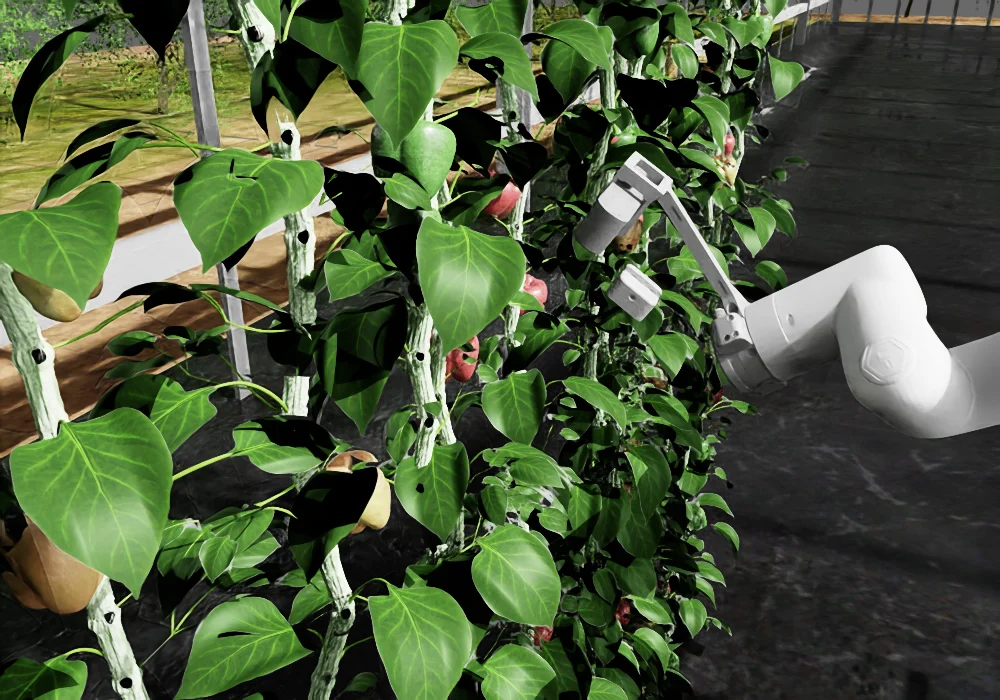

RSS 2027 Shepherd
Serving as a Shepherd for Robotics: Science and Systems 2027.
Resource-efficient robot learning · long-horizon mobile manipulation
I am a robotics researcher and PhD candidate at the University of Bonn. I build systems that combine learned priors, uncertainty, scene graphs and geometric reasoning for active perception, object search and manipulation on physical robots.
My broader direction is resource-efficient, adaptable robotics: systems that transfer knowledge across objects, tasks and environments while learning selectively through interaction.
Latest
Serving as a Shepherd for Robotics: Science and Systems 2027.
Serving as a Senior Reviewer for the HRI 2027 Pioneers Workshop.
Scene-graph-guided active perception for inspecting occluded crops. Read the preprint.
Two supervised MSc theses received the Bonner Informatik Group Best Thesis Award and the Grace Hopper Thesis Award. HRL news.
Best Poster Award for open-vocabulary semantic search in scene graphs. Award announcement.
Research agenda
I study how robots can represent incomplete worlds, decide what evidence they need, and reuse experience without carrying incorrect assumptions into new tasks.
Object-centric scene graphs and persistent beliefs that combine transferable priors with partial local observations.
Calibrated representations that expose what a robot does not know and guide task-relevant sensing.
Structured knowledge and interaction that reduce the data, computation and experience needed for new tasks.
Selected work
Selected projects spanning scene understanding, object search, active perception and multi-arm manipulation.




Open research
Public artifacts for reproducible work in scene reasoning, uncertainty-aware mapping and robotic manipulation.
Experience and leadership
Academic research, student supervision and industrial robotics across mobile manipulation, perception and real-time control.
Research in PhenoRob, Lamarr and AID4Crops; mentoring three junior PhD researchers and supervising seven completed and two ongoing MSc theses.
Built perception and manipulation architecture, hard real-time control and human-aware sensing for collaborative robots.
Developed planning, control, teleoperation and manipulation software for mobile and high-degree-of-freedom robots.
Starting April 2027
I am interested in teams developing resource-efficient, adaptable robots for long-horizon mobile manipulation.